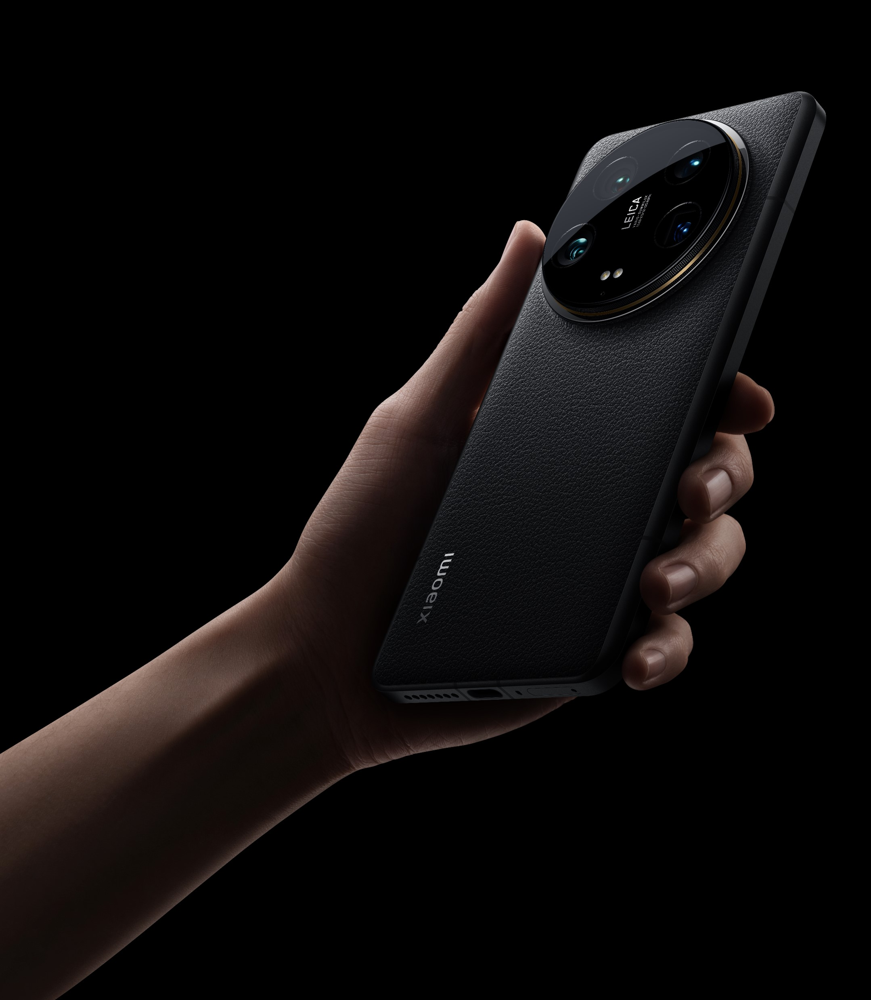
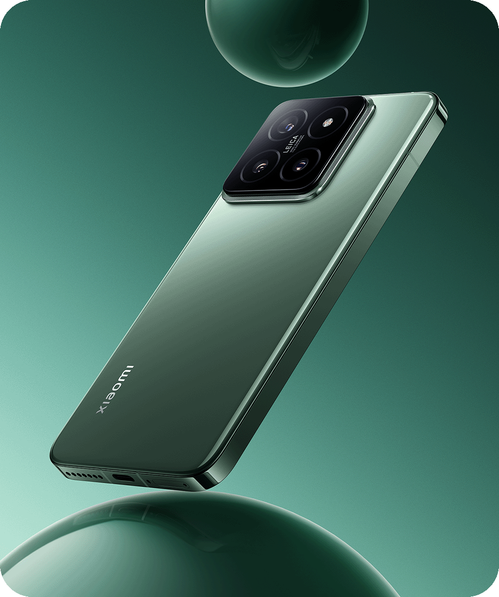

Noticia: contenido principal
Xiaomi se ha paseado por el Mobile World Congress y ha dejado a su paso todo un reguero de dispositivos de todo tipo, siendo el Xiaomi 14 uno de ellos. El nuevo smartphone de gama alta, lanzado en China hace escasos días, aterriza oficialmente en España para competir por el podio de la gama más alta. Lo hace estrenando procesador, sistema operativo y con una propuesta de lo más interesante.
No ha llegado solo, sino que el Xiaomi 14 se ha traído de la mano al Xiaomi 14 Ultra, a la Xiaomi Pad 6S Pro 12.4, al Xiaomi Watch 2 y a la Xiaomi Smart Band 8 Pro. La información de todos ellos está ya disponible en Xataka así que, sin más dilación, vamos a conocer mejor al dispositivo que nos ocupa: el Xiaomi 14.
Noticia: Más información
El Xiaomi 14 es un terminal acabado en cristal de color negro, blanco o el nuevo verde jade. La trasera está ligeramente curvada por los laterales para mejorar el agarre y su diseño es limpio y sencillo. Lo único que llama, y mucho, la atención es el módulo de cámaras con dos elevaciones que, a la vista está, sobresale bastante del chasis. Para conseguir un aspecto más limpio, Xiaomi ha movido el altavoz superior a la zona de la pantalla y el puerto infrarrojos a la propia losa del módulo de cámaras, de manera que el marco superior queda libre de puertos.
Si le damos la vuelta veremos la pantalla, una pantalla CrystalRed AMOLED con resolución "1,5K" (2.670 x 1.200 píxeles) de 6,36 pulgadas, lo que se traduce en 460 píxeles por pulgada. El panel usa tecnología LTPO, lo que le permite ofrecer una tasa de refresco dinámica de 1-120 Hz, algo cada vez más común en la gama alta. Todo eso se adereza con todas las tecnologías de HDR, incluyendo Dolby Vision, y un brillo pico de 3.000 nits que, aunque solo usaremos en situaciones más concretas, apunta maneras.
Por rematar el apartado multimedia, el Xiaomi 14 incluye también un lector de huellas bajo la pantalla, altavoces estéreo y un array de cuatro micrófonos repartidos por todo el terminal. La pantalla, por cierto, está protegida por Gorilla Glass Victus y dispone de tres certificaciones TÜV Rheinland: Flicker Free, Low Blue Light y Circadian Friendly.